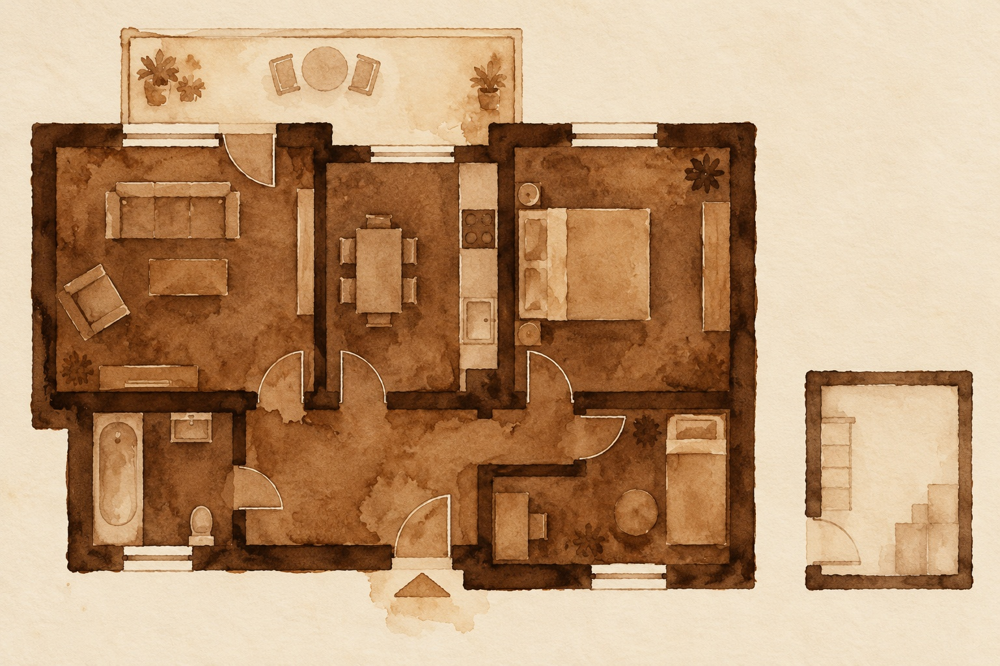
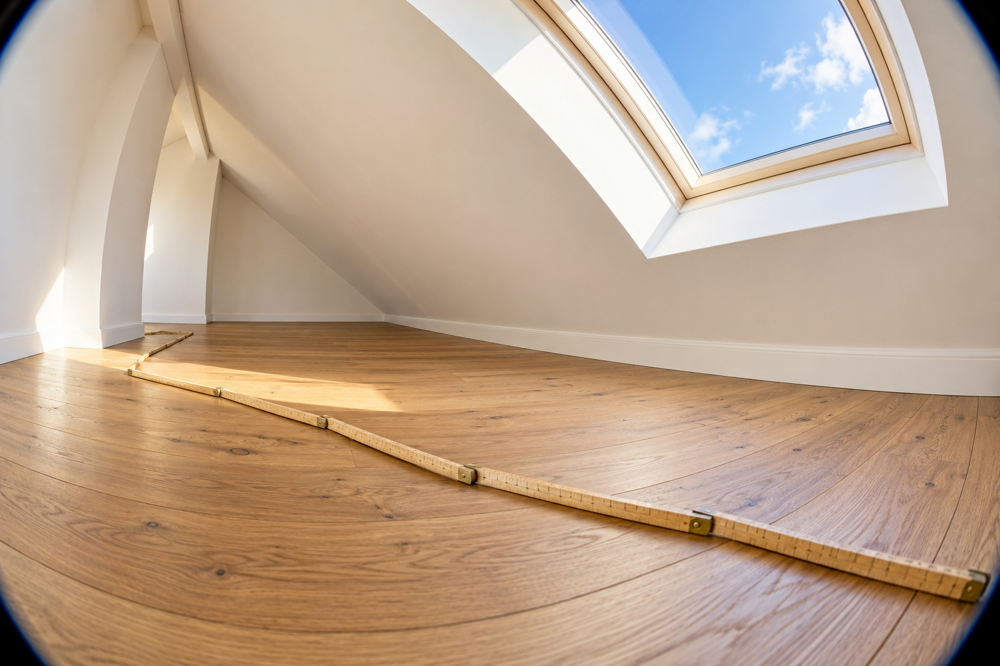

Die Wohnfläche einer Wohnung ist nicht die Fläche des Fußbodens. Nach der Wohnflächenverordnung zählen Flächen unter Dachschrägen nur anteilig, Balkone und Terrassen meist zu einem Viertel, Keller gar nicht. Gerade bei Dachgeschosswohnungen kann die tatsächliche Wohnfläche deutlich unter der Grundfläche liegen. Weil Kaufpreis, Miete und Finanzierung an der Wohnfläche hängen, sollte die Berechnung vor dem Kauf vorliegen und geprüft sein.
Das Wichtigste in Kürze
- Nach Wohnflächenverordnung zählen Flächen ab 2 m Höhe voll, zwischen 1 und 2 m zur Hälfte, darunter gar nicht.
- Balkone und Terrassen zählen in der Regel zu einem Viertel.
- Im Beispiel hat eine Dachgeschosswohnung mit 80 m² Grundfläche 62 m² Wohnfläche.
80 Quadratmeter Grundfläche, 62 Quadratmeter Wohnfläche
Die Dachgeschosswohnung aus dem Rechenbeispiel im Querschnitt. Schalten Sie zwischen Exposé und Wohnflächenverordnung um und tippen Sie auf die Zonen.
Kaufpreis 320.000 € · Anrechnung nach § 4 Wohnflächenverordnung · Höhen schematisch · Grafik: Fischer & Geserich
Welche Regeln gelten

Für die Berechnung der Wohnfläche gibt es in Deutschland vor allem die Wohnflächenverordnung (WoFlV). Sie gilt verbindlich für geförderten Wohnraum, wird aber auch im freien Markt am häufigsten herangezogen, in Mietverträgen, Exposés und Gutachten. Daneben gibt es die DIN 277, die Grundflächen und Rauminhalte von Gebäuden beschreibt, aber keine Wohnfläche im Sinne des Mietrechts. Wer eine Flächenangabe liest, sollte wissen, nach welcher Methode sie ermittelt wurde.
Die wichtigsten Regeln der Wohnflächenverordnung:
- Raumhöhe ab 2 Metern: Die Fläche zählt voll.
- Raumhöhe zwischen 1 und 2 Metern: Die Fläche zählt zur Hälfte.
- Raumhöhe unter 1 Meter: Die Fläche zählt nicht.
- Balkone, Loggien, Dachgärten, Terrassen: in der Regel zu einem Viertel, höchstens zur Hälfte.
- Unbeheizte Wintergärten und Schwimmbäder: zur Hälfte.
- Keller, Abstellräume außerhalb der Wohnung, Heizungsräume, Garagen: zählen nicht.
Wohnfläche und Bruttogeschossfläche
Die Bruttogeschossfläche ist etwas ganz anderes. Sie umfasst die gesamte Fläche eines Geschosses einschließlich der Außenwände, Innenwände und Konstruktionsflächen. Sie ist für Planung und Baurecht relevant, nicht für Kauf oder Miete einer Wohnung. Ein Dachgeschoss mit 200 Quadratmetern Grundfläche kann wegen der Wände und der Dachschrägen eine Wohnfläche haben, die weit darunter liegt.
Rechenbeispiel: eine Dachgeschosswohnung
Eine Dachgeschosswohnung in Berlin wird mit 80 Quadratmetern angeboten, zu einem Kaufpreis von 320.000 Euro. Die 80 Quadratmeter sind die Grundfläche der Räume, dazu kommt ein Balkon mit 8 Quadratmetern. Tatsächlich verteilt sich das so:
| Fläche | Raumhöhe | Anrechnung | Wohnfläche |
|---|---|---|---|
| 50 m² | ab 2 m | 100 % | 50 m² |
| 20 m² | 1 bis 2 m | 50 % | 10 m² |
| 10 m² | unter 1 m | 0 % | 0 m² |
| Balkon 8 m² | 25 % | 2 m² | |
| Gesamt | 62 m² |
Statt 4.000 Euro pro Quadratmeter zahlt der Käufer tatsächlich 5.161 Euro pro Quadratmeter Wohnfläche. Auch die Miete, die er erwarten kann, richtet sich nach 62 und nicht nach 80 Quadratmetern.
Warum die Wohnfläche so viel entscheidet
Für den Kaufpreis. Der Preis pro Quadratmeter ist die wichtigste Vergleichsgröße. Eine falsche Fläche verzerrt jeden Vergleich.
Für die Miete. Mieten werden pro Quadratmeter Wohnfläche vereinbart und angepasst. Weicht die tatsächliche Fläche um mehr als zehn Prozent nach unten von der im Mietvertrag vereinbarten ab, kann der Mieter nach der Rechtsprechung des Bundesgerichtshofs die Miete mindern. Für Mieterhöhungen zählt die tatsächliche Fläche.
Für die Finanzierung. Ohne Wohnflächenberechnung kann die Bank den Wert nicht sauber ermitteln. Ohne Wert gibt es keine Finanzierung. In unserer Praxis ist eine fehlende Wohnflächenberechnung einer der häufigsten Gründe, warum sich ein Kauf verzögert.
Wie Sie die Berechnung prüfen

Fragen Sie nach der schriftlichen Wohnflächenberechnung, nicht nur nach der Zahl im Exposé. Achten Sie darauf, nach welcher Methode gerechnet wurde, wer sie erstellt hat und wann. Vor allem sollte sie einen Stempel tragen, etwa von einem Architekten oder Sachverständigen. Prüfen Sie bei Dachgeschossen und Wohnungen mit Balkon, wie diese Flächen angesetzt wurden. Bei Zweifeln, oder wenn Grundriss und Angabe nicht zusammenpassen, lohnt sich ein Aufmaß durch einen Sachverständigen, bevor Sie unterschreiben.
„Wir gehen nicht in die Vermarktung, wenn nicht alle Unterlagen da sind. Sonst will man schnell zum Notar, und dann fehlt die Wohnflächenberechnung. Ohne die bekommt der Käufer keine Finanzierung.“
Die Einschätzung von Fischer & Geserich
Für Verkäufer bedeutet das, die Wohnflächenberechnung vor der Vermarktung zu beschaffen. Wenn wir mit einem Käufer ein Objekt prüfen, rechnen wir den Preis immer auf die tatsächliche Wohnfläche und lassen bei Zweifeln nachmessen.
Häufige Fragen
Wie wird die Wohnfläche bei Dachschrägen berechnet?
Nach der Wohnflächenverordnung zählen Flächen mit einer Raumhöhe ab 2 Metern voll, zwischen 1 und 2 Metern zur Hälfte und unter 1 Meter gar nicht. Bei Dachgeschosswohnungen liegt die Wohnfläche deshalb oft deutlich unter der Grundfläche.
Wie viel Prozent eines Balkons zählen zur Wohnfläche?
In der Regel ein Viertel, höchstens die Hälfte. Ein Balkon mit 8 Quadratmetern wird meist mit 2 Quadratmetern angerechnet. Gleiches gilt für Loggien, Dachgärten und Terrassen.
Was passiert, wenn die Wohnfläche im Mietvertrag falsch ist?
Weicht die tatsächliche Wohnfläche um mehr als zehn Prozent nach unten von der vereinbarten ab, kann der Mieter nach der Rechtsprechung des Bundesgerichtshofs die Miete entsprechend mindern. Für Mieterhöhungen zählt die tatsächliche Wohnfläche.
Quellen
Die Bilder in diesem Beitrag wurden mit KI erstellt.
Der Beitrag dient der allgemeinen Information und ersetzt keine Rechts-, Steuer-, Finanzierungs- oder Anlageberatung. Zinssätze in Beispielrechnungen sind Beispielwerte, keine aktuellen Konditionen.